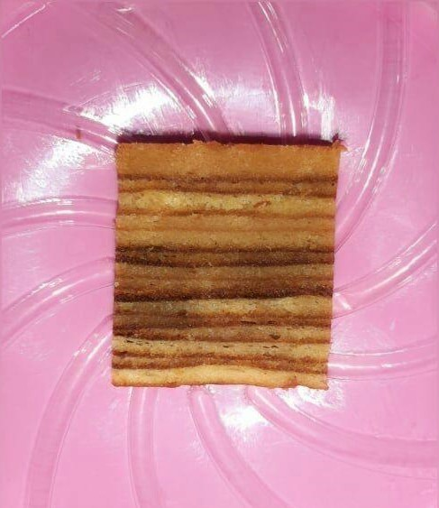

Bahan dan Cara Membuat
Kue Lapis

Bahan
- 350 gram mentega
- 150 gram margarin
- 4 sendok makan susu kental manis
- 20 kuning telur
- 2 putih telur
- 250 gram gula pasir
- 100 tepung terigu
- Susu Kental Manis
- 2 sendok makan bumbu lapis legit
- cetakan persegi 20cm, alasi kertas roti, olesi dengan mentega